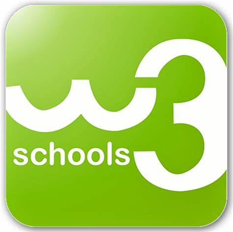
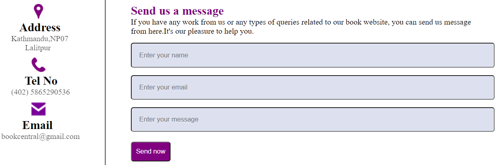

Reasearch Of The Book Central
Tools used while developing Websites:
Balsamiq Wireframe
Balsamiq wireframe is an amazing quick prototyping tool for creating project wireframes and mockups.
Sublime Text
It has many features that make working with code easier, such as syntax highlight, auto indentation, file type recognition, sidebar, macros, plug-ins, and packages.
W3 Schools

W3Schools keeps an up-to-date JavaScript reference, which includes all HTML and browser objects.
Udemy

Udemy is a platform for studying the fundamentals of html, CSS and JavaScript, as well as how to put them into practice.

References :
The design of the contact page was taken from the coding lab's website and modified. However, after on, the button send now, as well as the logos for the address, phone number, and email address, were modified. These logos were created in canvas and then colored with purple to give them a pop of color.
Resources
Aim of the Project :
The aim of the project "The Book Central" is to make user-interactive website that allows users to search for different genres of books as well as acquire all of the necessary information about price and other aspects of their product. The fundamental goal of this project is to make traditional trade significantly more efficient, speedier, and reliable. This method of doing business through e-commerce is a user-friendly system that allows the user to simply access the product. Users can check out products and from anywhere, at any time, using the book central website.
// detail about aim of the project